1 / 13
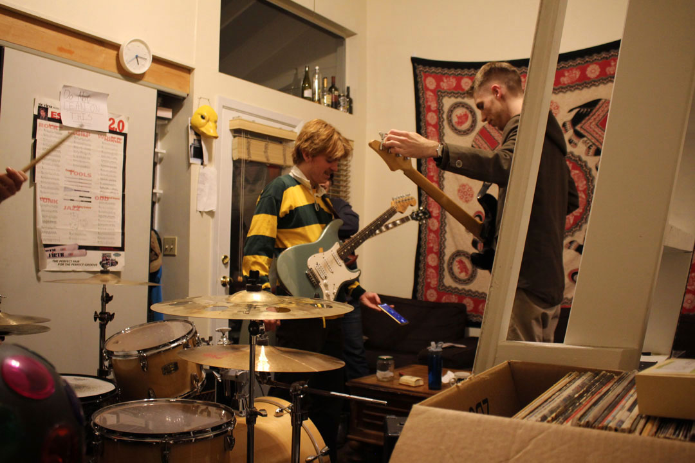
After a failed attempt at pitching their guitars vocally, junior forestry major Oliver Tawney admits defeat and pulls out his phone. Oliver plays a steady note off an app while junior urban planning major Hank McKay, the newest member of Autopipe, pitches his bass guitar in his living room for last-minute 7 p.m. band practice. 2/9/20
2 / 13
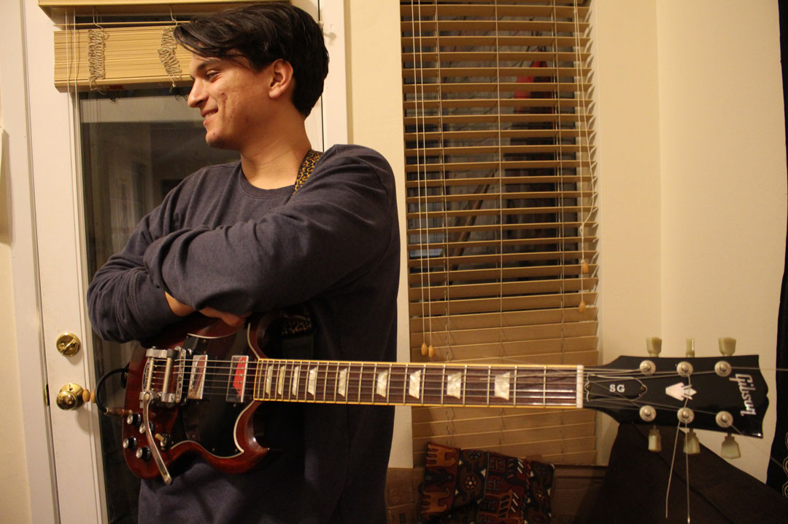
As the band gets ready to practice, junior architecture major Arjun Urbonas laughs at a joke cracked by bandmate and friend, Oliver. Arjun met Oliver through some mutual friends during their freshmen year after word got out that the band was looking for a bassist. Later, Arjun was slotted into the position of lead guitarist, where he remains today. 2/9/20
3 / 13
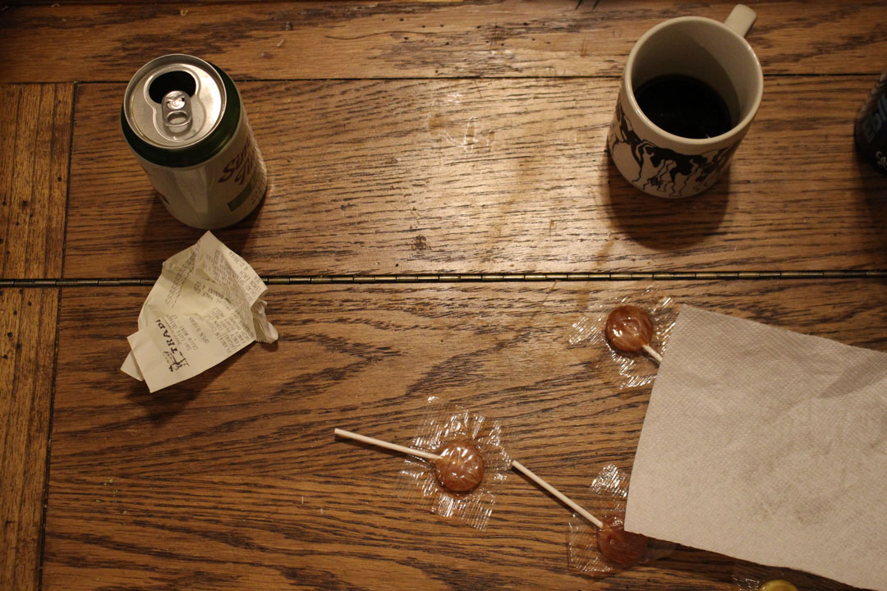
Days old beer, a cup of coffee, a Trader Joes receipt, lollipops, and a napkin are placed atop the living room coffee table as the band clears off the surfaces of their equipment. After forming the band freshmen year, Oliver and junior soil science major Liam Graham moved into ‘Apartment 6’, where the guys have band practice and host weekly “fit-check Friday” parties for them and their friends. 2/9/20
4 / 13
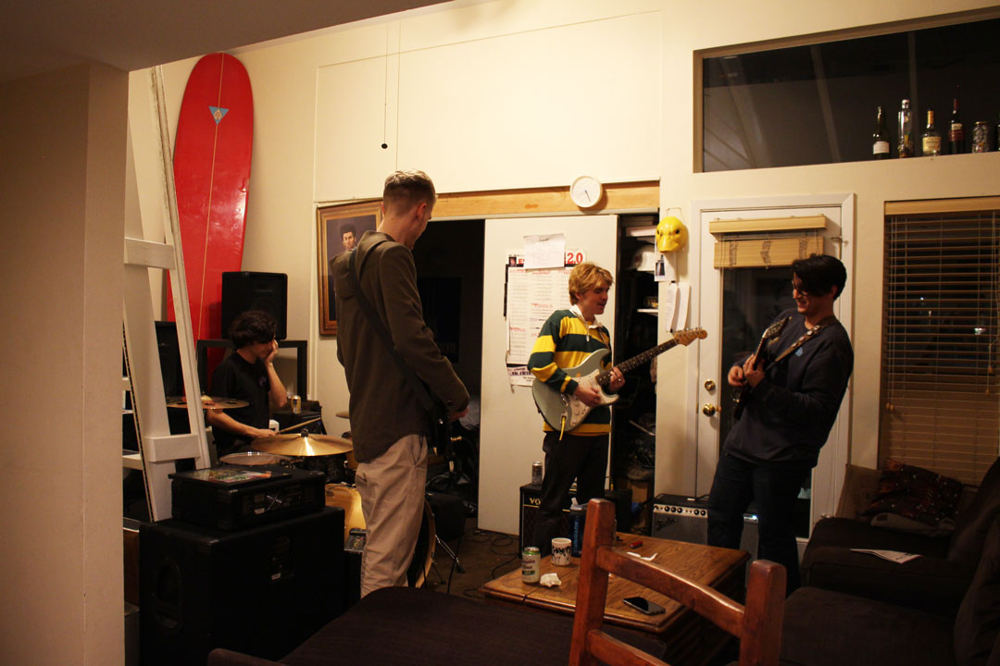
Liam Graham, Hank McKay, Oliver Tawney, and Arjun Urbonas warm-up for a quick band practice after a long weekend. Autopipe achieved its goal of geographic expansion after playing at their first show in Santa Barbara on Feb. 8, 2020. 2/9/20
5 / 13
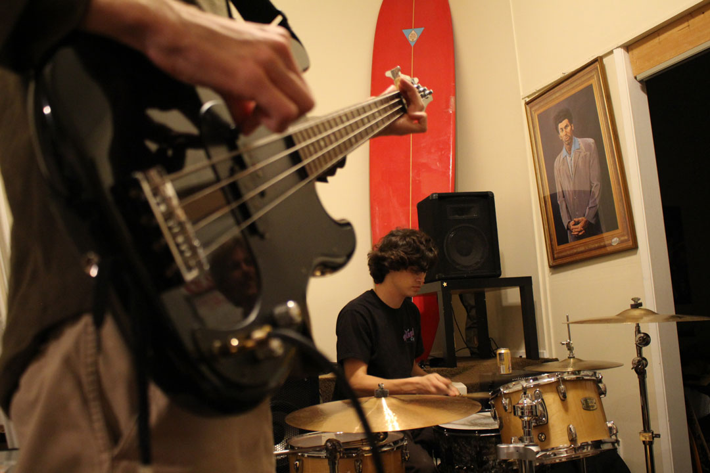
Hank, lead bassist, and Liam have only recently begun playing together. Hank has temporarily taken over after their friend and former bassist, Chad Apadopoca, went abroad to Thailand. 2/9/20
6 / 13
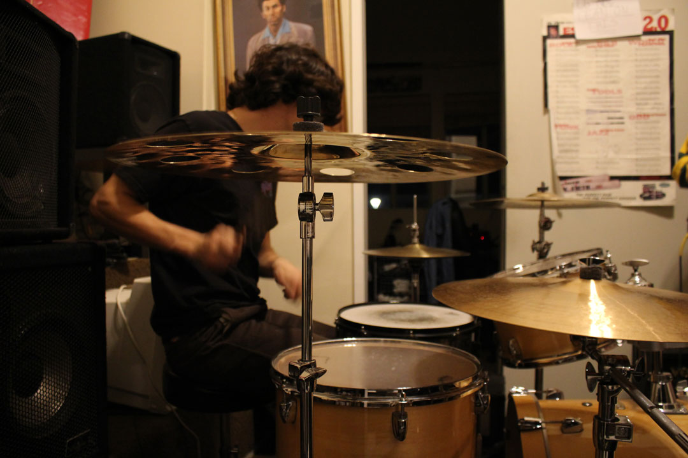
Liam first began playing the drums in his middle school’s band. In high school he and his friends “kind of had a band,” but Liam explains that he learned most of his techniques during his time as a member of the drumline. 2/9/20
7 / 13
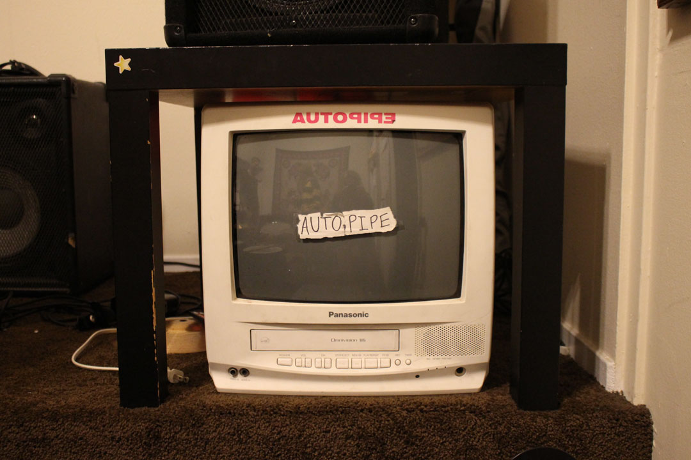
The Autopipe TV sits in Apartment 6 behind Liam’s drum set. The TV has been displayed at all of Autopipe’s shows since Liam converted it from a tape player in 2018. It has become a trademark for the band, consistently appearing in their music videos and social media. 2/9/20
8 / 13
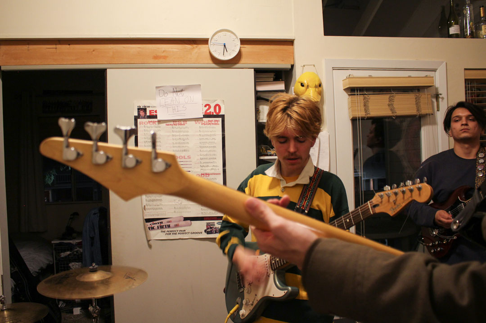
Oliver leads the others in practicing their new song. “Let’s get this down so we can play it at our next show,” he says while being interrupted by the tapping of the drums and various guitar riffs. Autopipe is working on developing more music in anticipation of their upcoming show in Santa Barbara on Feb. 21, 2020. 2/9/20
9 / 13
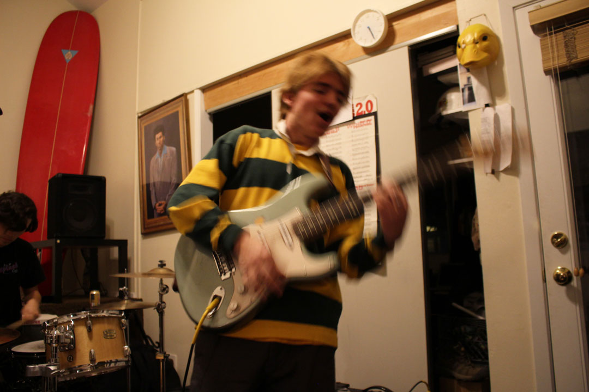
Oliver, lead singer and rhythm guitarist, gets in the zone while singing the band’s first recorded song; Koala Dreams. Autopipe is widely recognized for Oliver’s unorthodox theatrics during their concerts. 2/9/20
10 / 13
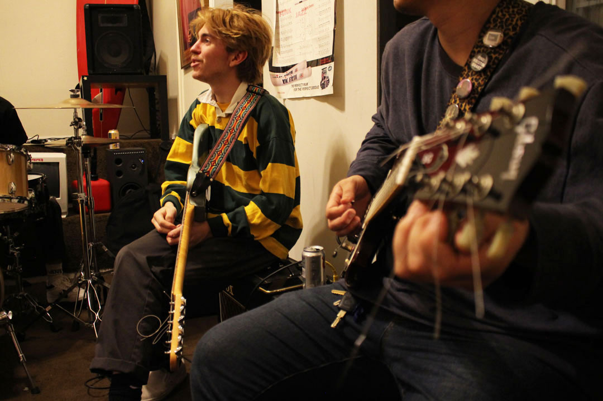
Arjun messes around with the cords of his guitar while Oliver and the others plan Autopipe’s schedule for the rest of the quarter. The four boys hope to begin charging more for their shows since their popularity has grown over the last three years. 2/9/20
11 / 13
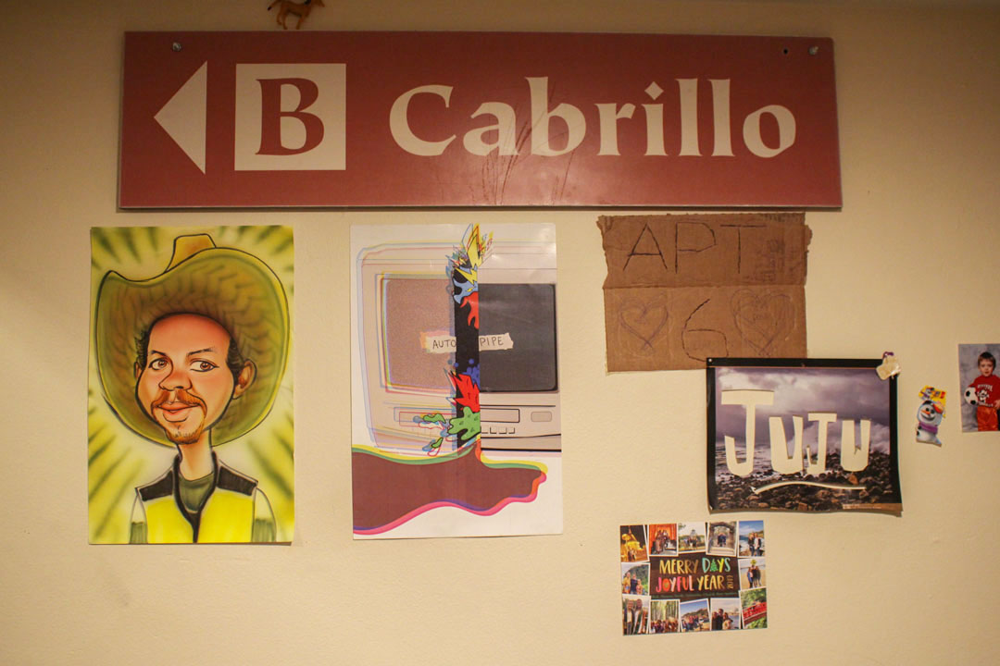
A stolen sign from the dorm where the band-members of Autopipe met hangs on the wall of Oliver and, junior soil science major, Liam’s apartment, referred to as “APT 6”. Below a caricature, an Autopipe poster, a piece of cardboard, and a holiday card. 2/9/20
12 / 13
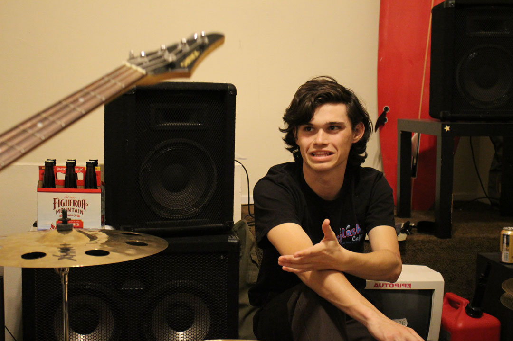
After practice is over, Liam and the other band members discuss the payment of their most recent house show, mentioning that show hosts should be more transparent about the profits made. Consistent house-show host and junior biology major Keagen Hansen says on the subject: “It’s hard to make sure everyone’s happy, especially when you’re juggling what you want [for your house] versus what the people want, and then also what the band wants.” 2/9/20
13 / 13
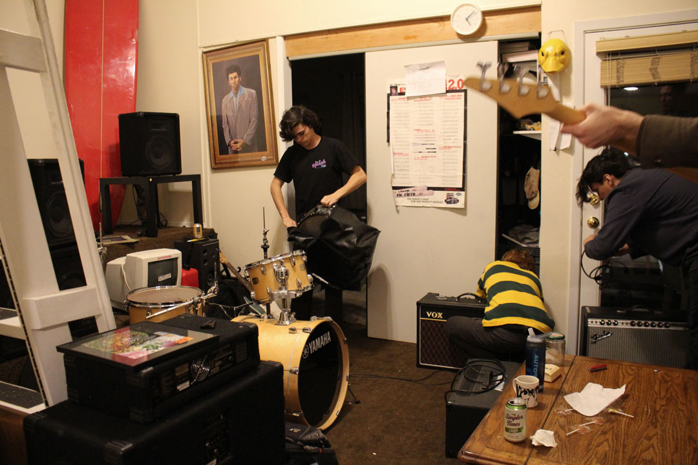
The band packs up their instruments for the night. This will not be the last late-night jam session for the Autopipe boys. 2/9/20
❮
❯